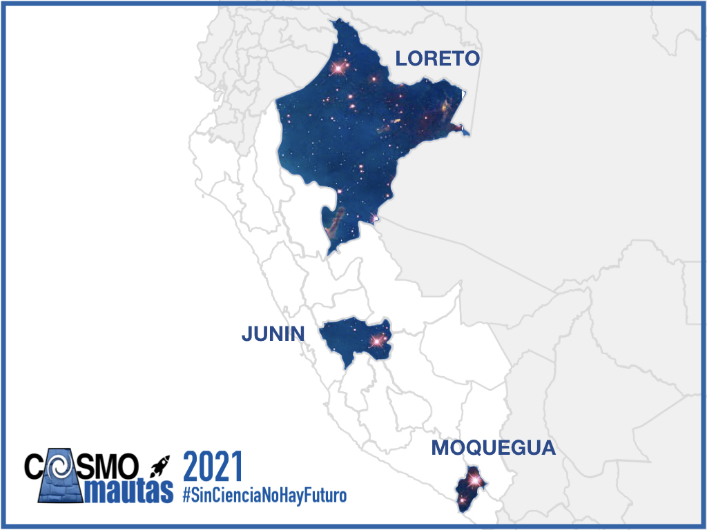

.

CosmoAmautas es un proyecto que busca afianzar la educación científica de niños y niñas peruanas, en particular en el ámbito rural y provincial.
Nuestro objetivo es acercar el método científico a los alumnos por medio de sus docentes, y que investiguen juntos los descubrimientos más emocionantes sobre el Universo, usando la física y las matemáticas.
En este taller, astrofísicos profesionales y estudiantes universitarios de física compartirán actividades pedagógicas relacionadas a diversos temas de la astronomía.
Las actividades se enfocaran en afianzar una educación científica moderna e interactiva, con un especial enfoque en incentivar una mayor participación de niñas y mujeres en carreras científicas.
Si eres un docente comprometido, al que le fascinan las ciencias del espacio, le gusta experimentar nuevos métodos en sus clases, y que comparte nuestra visión de educar mentes curiosas y libres para el futuro de tu región, entonces CosmoAmautas es para tí!
La capacitación se llevará de forma virtual usando la plataforma Zoom
El taller consiste en 6 sesiones, que serán los sábados por las mañanas, del 24 de Abril al 29 de Mayo.
Nuestras sesiones serán interactivas, con grupos pequeños, y basadas en actividades manuales compartiendo y usando el método de aprendizaje por indagación.
Los 50 profesores seleccionados recibirán por correo una caja con los materiales para el taller, imágenes y literatura de astronomía.
Ser docente activo de 5to, 6to grado de primaria, o secundaria, de las regiones Junín, Moquegua o Loreto.
Docentes de otras regiones del Perú, estén atentos a nuestras próximas convocatorias siguiendo nuestras redes sociales.
Las próximas ediciones de CosmoAmautas llegarán pronto a sus regiones.
Disponibilidad para la participación en las seis sesiones de capacitación.
Tener accesso a internet y disponer de un smartphone, tablet o computadora, que tengan micrófonos y cámara.
Especialidad de educación en ciencias naturales, física, química, matemáticas. También consideraremos docentes de disciplinas no relacionadas, si estos tienen un interés demostrado en ciencias/astronomía.
Motivación e iniciativa propia demostrada para fomentar actividades extracurriculares/científicas con los alummos.
Compromiso a incluir lo aprendido en la curricula escolar, incluyendo un par horas durante la duración del taller.
Compromiso a iniciar y liderar un Club de Astronomía extracurricular durante el año escolar.
Día 1 : Los secretos de nuestro cielo, el sol y la luna
Día 2 : Exploraremos los planetas, meteoritos y demás objetos del sistema solar
Día 3 : Somos polvo de estrella: la física detrás de las estrellas
Día 4 : Hay vida en otros planetas?: Planetas extrasolares y cómo cuidar la vida en el nuestro!
Día 5 : El inmenso universo: Explorando galaxias lejanas y la física de los agujeros negros
Día 6 : La historia del todo: la teoría del Big Bang y la historia del universo
Comparte la convocatoria con todos tus colegas!